Pizza al trancio
Il classico milanese: impasto alto e ben lievitato, tanti gusti. Il motivo per cui si torna.
Trattoria · Pizza al trancio · dal cuore di Lambrate
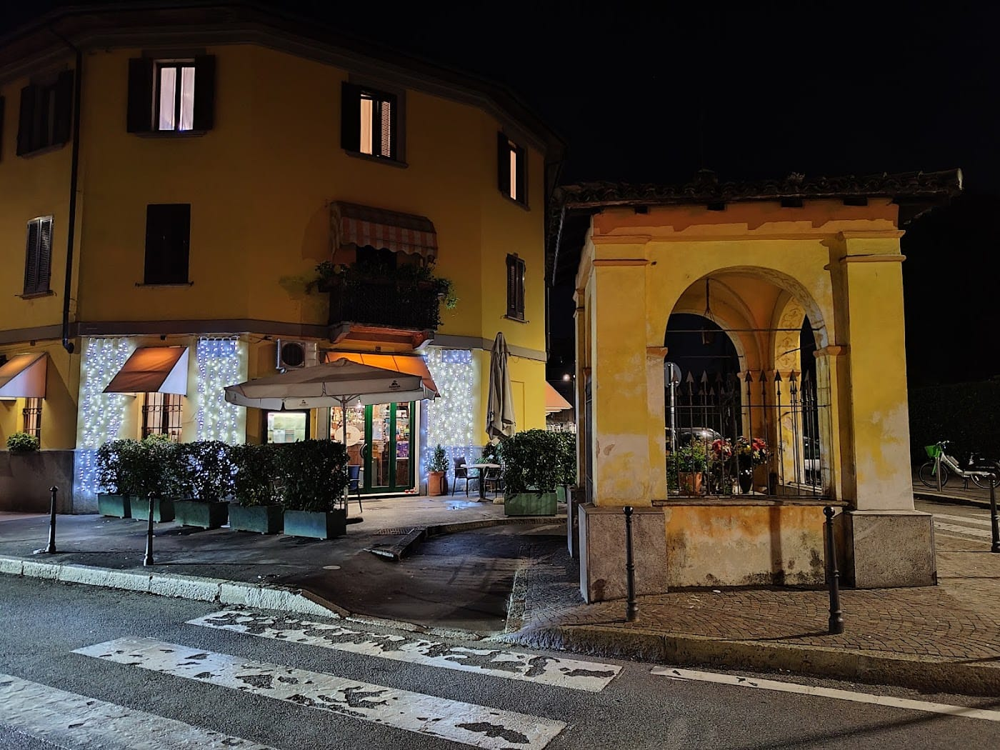
Una storica trattoria a conduzione familiare, all'angolo dove veglia la piccola cappelletta. Pasta, carne, pesce e i grandi tranci di pizza che l'hanno resa un'icona del quartiere.
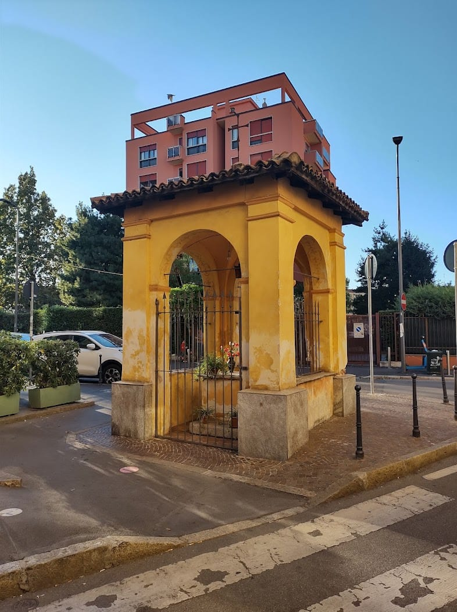
La storia
Prende il nome dalla cappelletta all'angolo — la piccola edicola votiva che da sempre veglia sull'incrocio tra Via Carlo Bertolazzi e Via Conte Rosso. Attorno a lei, da generazioni, una trattoria a conduzione familiare che di Lambrate è ormai un pezzo di casa.
Sale grandi ma accoglienti, tovaglie a quadri, un menù vastissimo e un'atmosfera «da paese», nel senso più caldo del termine. Si viene per stare bene e mangiare tanto: pasta, carne, pesce, vini regionali e i tranci di pizza.
Il piatto forte
Alta, soffice, ben lievitata e generosa: il trancio in stile milanese, quello «tipico di questa zona, difficile da trovare altrove». Dal classico pomodoro e mozzarella alle versioni più ricche con burrata, crudo e verdure. Si taglia, si porta al tavolo, si torna a prenderne ancora.
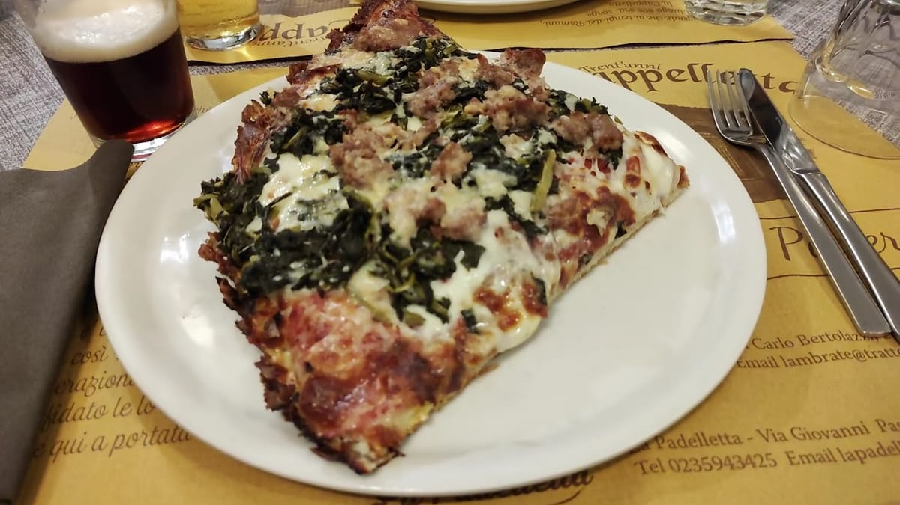
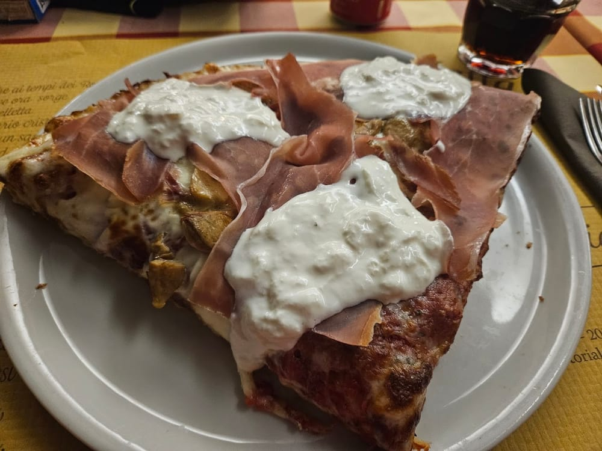
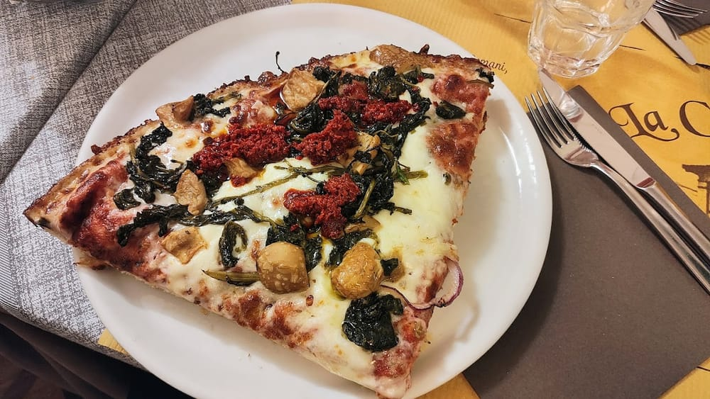
In tavola
Il classico milanese: impasto alto e ben lievitato, tanti gusti. Il motivo per cui si torna.
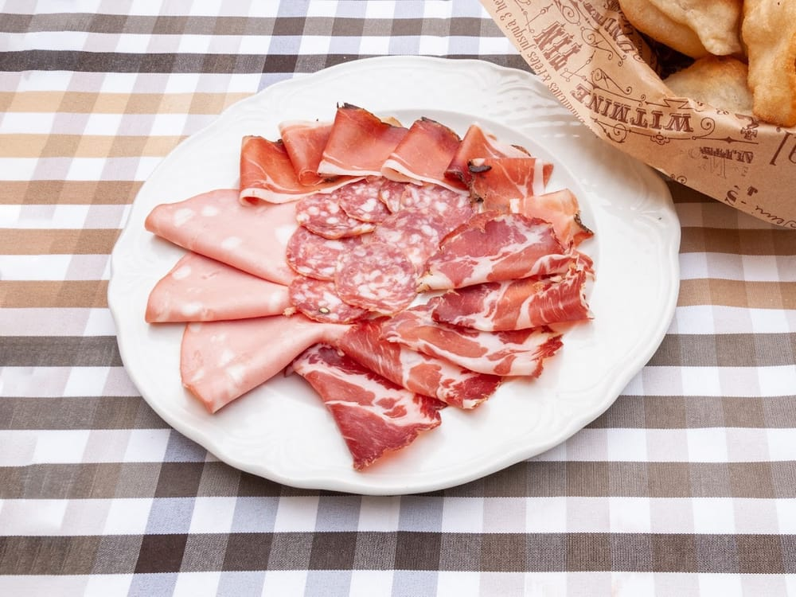
Taglieri di salumi e formaggi con il gnocco fritto caldo. L'inizio giusto di ogni cena.
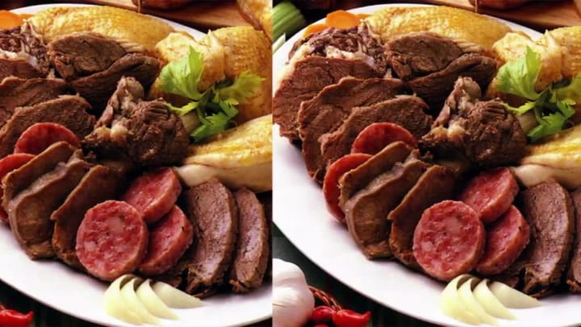
Cacio e pepe, bigoli, gricia; e poi stinco, cinghiale e i secondi di una volta.
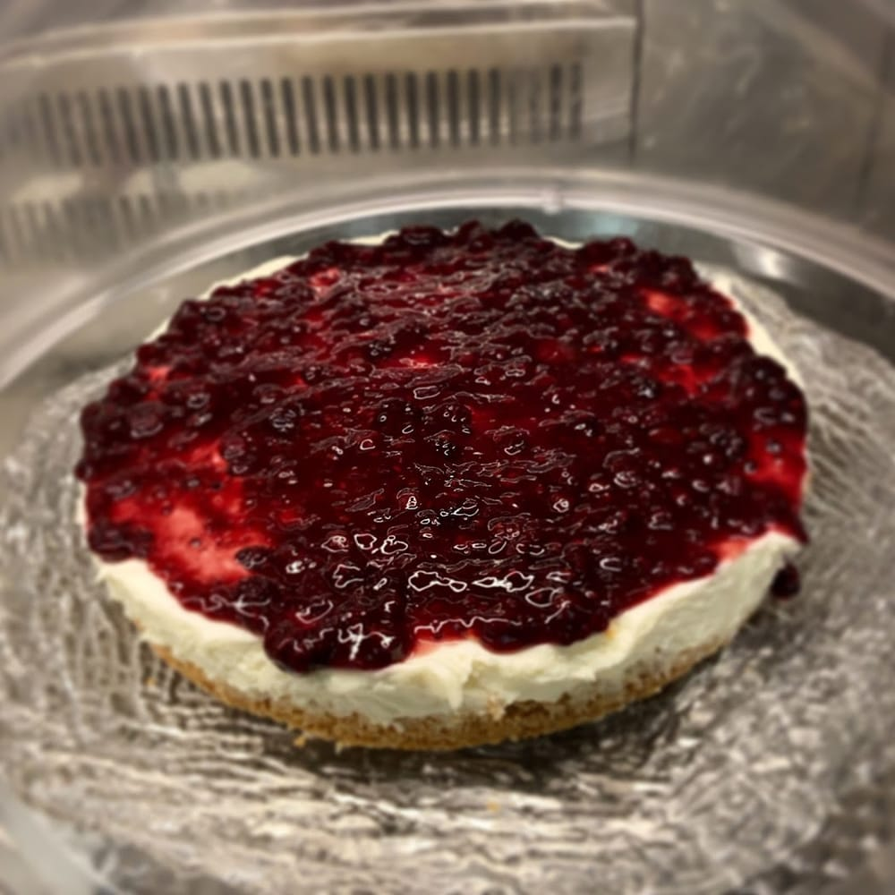
Dolci fatti in casa e una bella carta di vini regionali per chiudere con calma.
Menù indicativo. La carta completa cambia con le stagioni: chiedi in sala o chiama per le proposte del giorno.
Gallery
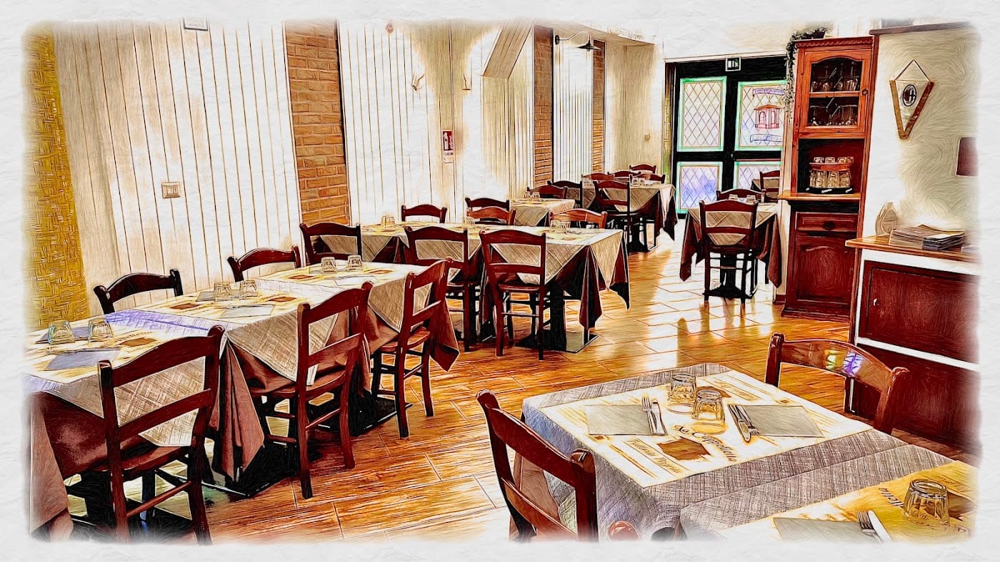
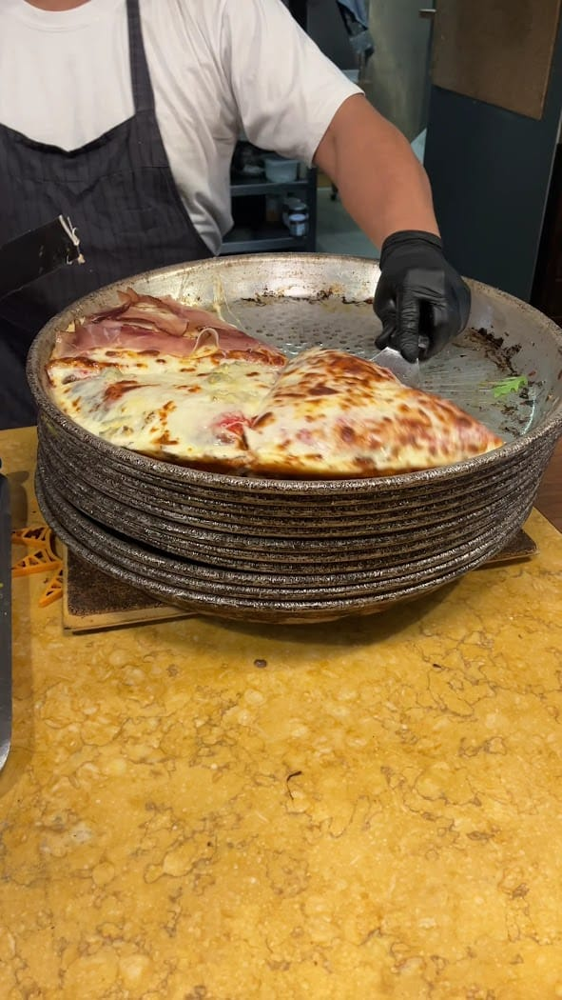
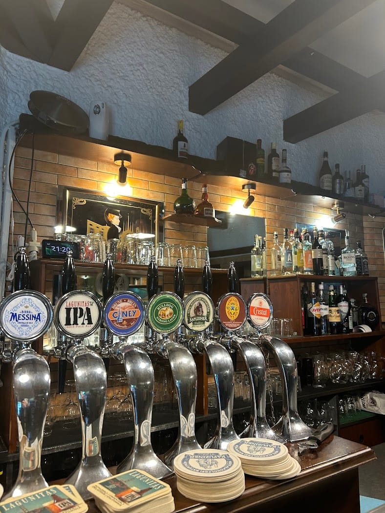
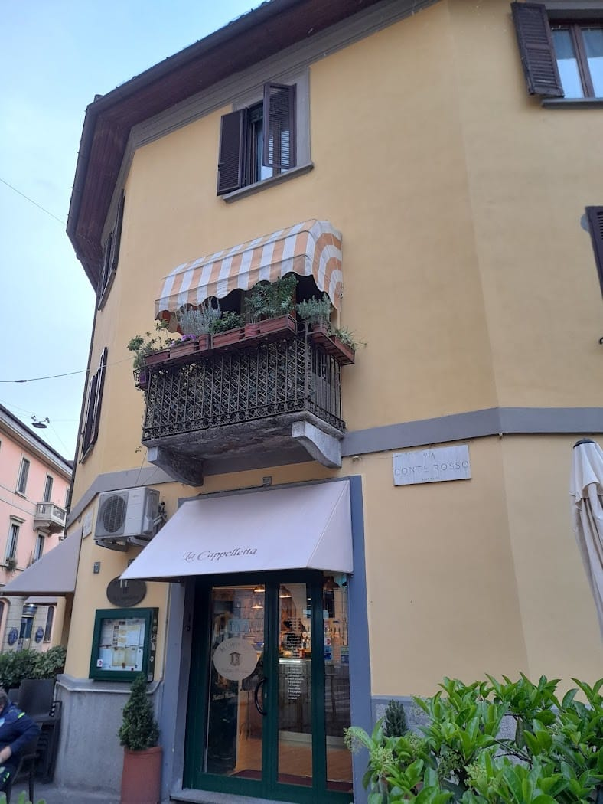
Le voci del quartiere
Sempre bello mangiare una pizza alla Cappelletta, super golosa e sfiziosa, ci torniamo volentieri. Posto della vecchia Milano.
Eduard Toffanello · ★★★★★
Un locale d'altri tempi. Pizza ottima e abbondante, servizio cortese e familiare senza essere invadente. Atmosfera da paese, nel senso più caldo e affettuoso del termine.
Massimo Santini · ★★★★★
Consigliatissimo. Personale preparato, molto gentile e sorridente — oggi cosa rara! Pizza ottima, locale pulito e accogliente. Complimenti.
Daniela Simone · ★★★★★
Locale grande ma con sonorità ridotta: tanta gente e si riusciva a parlare senza problemi. Cibo ottimo, la pizza molto abbondante con un impasto ben lievitato.
Chiara Zannoni · ★★★★★
Great, Milan-style pizza on a thick crust. Typical for this region, difficult to find elsewhere. Recommended to try!
Marcin Olas · ★★★★★
Dove siamo
FAQ
In Via Carlo Bertolazzi 26, all'angolo con Via Conte Rosso 31, a Lambrate (Milano).
Da martedì a domenica 12–14:30 e 19–23. Lunedì solo cena, 19–23.
La pizza al trancio in stile milanese, alta e abbondante, insieme al gnocco fritto con i salumi.
Chiamando lo 02 215 1456. La trattoria è grande ma molto frequentata: meglio prenotare.